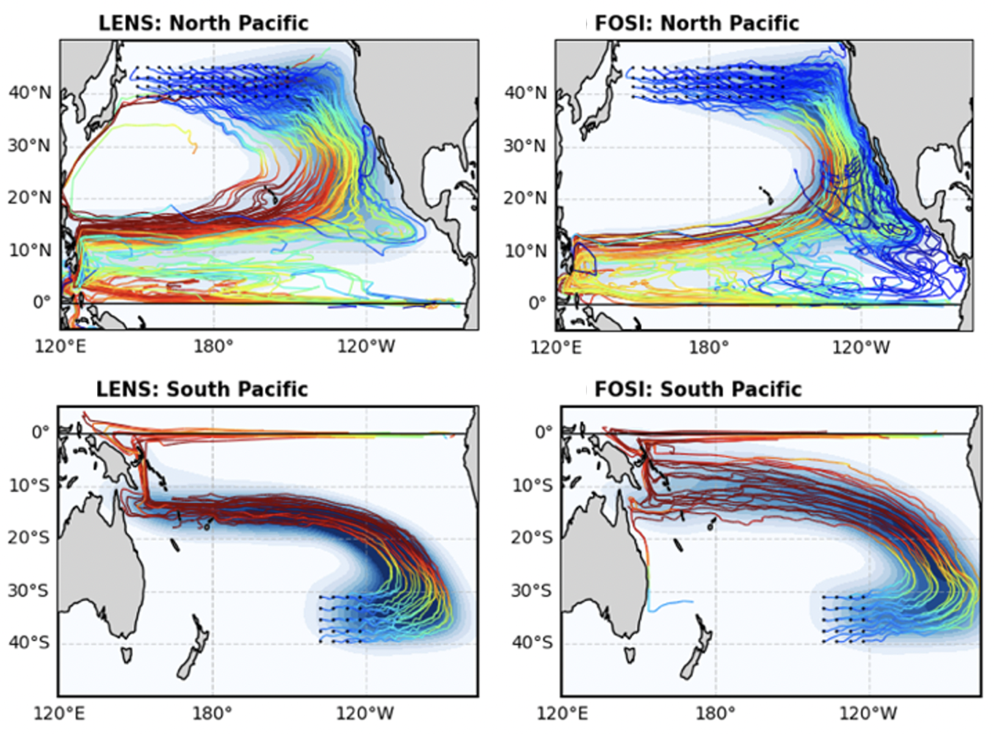
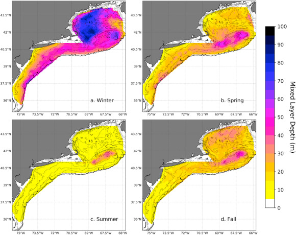

Research Projects
-

Subtropical Cells and the Double-ITCZ Bias
The pervasive double-ITCZ bias in climate models reorganizes ocean circulation by creating artificial barriers of Potential Vorticity that block Subtropical Cell flow. This reduces tropical-subtropical connectivity and impacts decadal climate variability.
- C. Cai, M. Luongo, L. Thompson, W. Kessler, A.-L. Deppenmeier. Double-ITCZ Bias Reduces Southern Hemisphere Influence on Tropics via Oceanic Pathways.In Progress
-
Marine Heatwaves
My research develops and uses object-based methods to track marine heatwaves, including the Ocetrac framework for quantifying climate events. These tools improve prediction evaluation and reveal global spatiotemporal patterns of marine heatwave evolution.
- C. Cai, C. Mendiola, L. Thompson, E.A. Maroon, A.-L. Deppenmeier, J.T. Cohen, V. Staneva. How extraordinary is The Blob marine heatwave? In Progress
- C. Cai, L. Thompson, E.A. Maroon, A.-L. Deppenmeier, J.T. Cohen, V. Staneva. Drivers of Marine Heatwaves in the North Pacific Ocean. Journal of Climate. In Review
- C. Cai, J.T. Cohen, H.A. Scannell, V. Staneva, L. Thompson (2025). Ocetrac: An Object-based Framework for Tracking and Quantifying Climate Events in Gridded Datasets: Introducing the Measures Submodule. SciPy Proceedings. DOI:10.25080/vxkf4244
- J.T. Cohen, L. Thompson, E.A. Maroon, A.-L. Deppenmeier, C. Cai (2025). Object-based evaluation of marine heatwave predictions. Geophysical Research Letters.. DOI:10.1029/2025GL115021
- H.A. Scannell, C. Cai, L. Thompson, D.B. Whitt, D.J. Gagne, R.P. Abernathey (2024). Spatiotemporal Evolution of Marine Heatwaves Globally. Journal of Atmospheric and Oceanic Technology. DOI:10.1175/JTECH-D-23-0126.1

-

Mixed Layer Depth
As the Northeast U.S. continental shelf rapidly warms, we established its first detailed mixed layer depth climatology. The seasonal cycles vary regionally and are dominated by year-to-year changes that current models don't fully replicate.
- C. Cai, Y.O. Kwon, Z. Chen, P. Fratantoni (2021). Mixed layer depth climatology over the northeast U.S. continental shelf (1993-2018). Continental Shelf Research. DOI:10.1016/j/csr.2021/104611